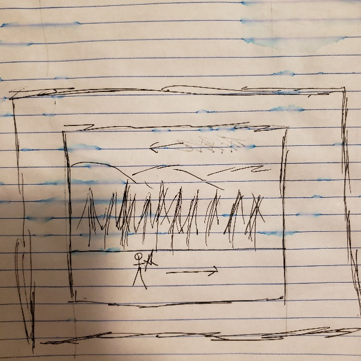
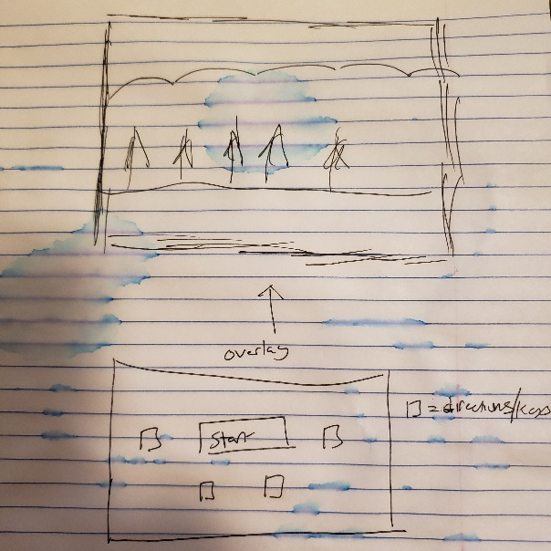

Winter's Dawn
High Concept
The player avoids and kills enemies to attempt to get as far as possible.
Genre
Platformer, endless runner, sorta 2d combat
Platform
Desktop Only
Story
The narrative is simple, the player's objective is to survive, and get as far as possible while doing so. The narrative on why the knight is running, and fighting is up for the imagination
Aesthetics
Graphics style: Pixilated more similar to a diablo look but 2d, it will also have a winter feel with snow particles
Sound: Fairly realistic sounds for medival combat
Types of sound: background ambience, music, and in game responsive sound
Gameplay
Mechanics
The player has the ability to move through a robust state machine, they can roll, block, move, stand still, or attack Each move give the player the ability to fight and avoid enemies. Elements such as the shield and attack will have charges, so their use will be limited. Forcing the player to change their strategy as the game goes on. The enemies will run at the player and attempt to hit the player.
Mockups
 Directions, R-roll, Space-attack, D-move, Shifr-block, some states cannot access other states